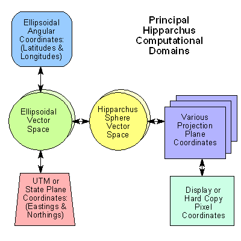

The purpose of this chapter is to describe the Hipparchus Library, how it is organized, its naming conventions and its support facilities, including the Hipparchus Auxiliary Library.
The Hipparchus Library (hipparch.lib) provides a complete set of ready-to-link functions for managing the geographic attributes of your data. The Hipparchus Auxiliary Library provides the C language source from which you may construct an auxiliary library suited to your interface requirements (usually called hippauxl.lib).
The functions of the Hipparchus Libraries may be freely integrated with applications developed in C++. However, to avoid the mangling of function names, any Hipparchus C language header files included in C++ programs should be encapsulated with the code sequence:
extern "C" {
...
}
or its equivalent.
All functions of the Hipparchus Library are fully re-entrant and may be linked for multi-threaded (multi-task) execution. All are formally documented in the Hipparchus Library Reference Manual.
h1 Data Conversion and Cell Lists
These functions provide general facilities for the conversion of latitudes, longitudes and other angles to and from Hipparchus internal formats, for the management of lists of cell identifiers and for the management of system heap memory.
h2 Plane Geometry.
These functions provide for the derivation of planar items such as circles and ellipses and for the calculation of planar productions such as the intersection of line segments. Included are functions that provide affine "rubber-sheet" transforms for planar data.
h3 Spherical Geometry.
These functions provide facilities for the vector algebraic calculation of spherical surface and solid geometry productions. Examples include spherical arc, chord, line segments and point-line proximity. Functions for simple projective mapping and unmapping are included.
h4 Ellipsoidal Geometry.
These functions provide facilities for quadratic ellipsoidal geometric calculations including surface distances, azimuths and conversion between a specified ellipsoid and other domains. Functions are included that call on the satellite orbit modeler and relate orbit positions to points on a planetary surface.
h5 Classical Cartographic Projections.
These functions provide UTM (Gauss-Kreuger) to ellipsoid and other ellipsoid mapping and unmapping operations.
h6 Cell Structures and Local Coordinates.
These functions provide facilities to construct, verify, maintain and navigate Voronoi cell structures. Included in this section are functions that manage Hipparchus scatchpad memory
h7 Terrestrial Object Manipulation and Spatial Relationships.
These functions provide facilities to construct, verify, manipulate and relate terrestrial objects (point sets, line sets and regions). Higher-level functions permit new objects to be derived from others as a function of their spatial relationships. Several of the functions enable the construction of terrestrial objects from the nadir trace or sensor swath of satellites.
Hipparchus Auxiliary Library
All functions of the Hipparchus Auxiliary Library are re-entrant and may be linked for multi-threaded (multi-task) execution. There are three sections:
h8 File Access functions.
Several of these functions provide simple access to Hipparchus stream I/O files known as point, line or region collections (PLR's). Using standard run-time stream I/O, these provide efficient access to static geographic vector data. Other functions in this section support dynamic memory-mapped file access. All are formally documented in the Hipparchus Library Reference Manual.
h9 Geographics.
These functions support the rendering of terrestrial objects and satellite orbits as well as latitude-longitude reference grids and Voronoi cell structures. Renderings can be displayed or plotted in any of the gnomonic, stereographic, conic (Lambert-like), orthographic, Mercator or Miller-like projections. Functions provide for conversion between global and differentially-encoded coordinates and for "quick-mapping" between differentially-encoded coordinates and the pixels of a display. In addition, there are functions that can transform back and forth between cartographic planar projection coordinates and discrete display or plotter pixel coordinates.
All of the functions of this section are re-entrant, permitting linkage for multi-threaded (multi-task) execution as well as single-thread simultaneous generation of multiple displays and/or hard copy graphic outputs.
These functions are designed for cross-platform GUI integration and assume only minimal graphic primitives. The supplied source is directly compilable for Windows 95/98/NT, but may be freely modified and re-used in other GUI's. All are formally documented in the Hipparchus Library Reference Manual.
h0 Utility User Interface.
These functions provide low-level user interface facilities for use with the utility and other sample source programs provided. These are supplied in source and although some are specific to the demo GUI environment, they may be freely modified and re-used. All are formally documented in the Hipparchus Library Reference Manual.
All data structures referenced by the Hipparchus Libraries are defined in supplied header files. These files, referenced by your #include statements, provide the required definitions for:
In addition to their definitions in the header file hipparch.h, many of these structures are graphically diagrammed in an HP PCL printable file strtbls.pcl, distributed under HELP sub-directory.
The functions provided in the Hipparchus Libraries contain no globally or locally defined static variables.
All Hipparchus Library functions are available for use when constructing your application. There are no hidden components or structures. Many of the functions were designed primarily for internal use in implementing the more powerful functions. So, unless you are pressing the limits of Hipparchus, it is unlikely that you will find a need to reference these internal functions. Nevertheless, their prototypes and specific types, constants and structure definitions are fully described and available for use, should the need arise.
Hipparchus Library function names are exactly six characters long (for example, h5utmz). Full descriptive names (i.e., "long" names) for each function are also established by #define pre-processor statements supplied in one of the header files that are distributed with the Hipparchus Libraries. You may invoke the functions by either their short or long names. However, using long names adds to a program's readability. The Hipparchus Library Reference Manual is organized alphabetically using the long names.
Developers may choose whichever form is most comfortable. Each function name begins with the letter h, followed by a digit denoting the section of the library (for example, 5 for the classical cartographic projection functions). A four-letter lower case mnemonic (for example, utmz) completes the short name. The long names are separated from the prefix with an underscore. The long names use both upper and lower case letters. The long name for our example h5utmz is h5_UtmCentralMeridian.
Hipparchus Auxiliary Library functions have long names only.
For tutorial purposes, we will use only the long names in the sample programs.
Note: Your program's object modules will always reference the Hipparchus Library functions by their short names. Any related error messages issued by your compiler/linker will refer to short names. (The Hipparchus Library Reference Manual has numerous hyperlinks to cross-reference short names and long names).
The following are abbreviations we used in constructing the long function names. They are presented as clues to the intent of the functions:
These are provided in the supplied header files hipparch.h and hippengn.h. The supplied on-line HELP information details each function prototype and provides additional notes and usage commentary extracted from the Hipparchus Library Reference Manual.
Some functions are implemented as C/C++ language macros. These are identifiable by their names which begin with Hx_, where x refers to a section of the Hipparchus Library or the Hipparchus Auxiliary Library.
Standard type definitions for elementary Hipparchus constants and variables are defined in the supplied header files hipparch.h, hippengn.h and hippvrsn.h.
While the contents of hipparch.h and hippengn.h are version independent, the contents of hippvrsn.h headers are associated with a particular Hipparchus version. A separate hippvrsn.h header is supplied for each version in the distribution. The types defined by hippvrsn.h are few, referring mainly to the preferred word size for numbers and pointers.
Within the Hipparchus Library Reference Manual, many of the references to these types are hyperlinked to their definitions.
In Hipparchus, manifest and system constants are descriptively named from an upper-case alphabet that includes numerals and the underscore.
Manifest and system constants are defined by the supplied header file hipparch.h.
Manifest constants are sometimes called program parameters. They are program-related constants or codes that are given specific names for the combined purposes of readability, scope and portability. For example, the manifest constant MERCATOR defines a numeric code that refers to one of the projection options.
System constants are mathematical or physical values that are considered constant by Hipparchus and are given specific names for much the same reasons given above. For example, the system constant ERTHRAD defines the approximate value for the radius of the Earth.
Within the Hipparchus Library Reference Manual, many of the references to these constants are hyperlinked to their definitions.
From the forgoing description of the Hipparchus Libraries, you will have guessed that an application that incorporates Hipparchus technology will likely perform computations in more than one domain.
First, your external data may be expressed in the conventional geographic coordinate domain of latitudes and longitudes (angles). Although these angles always specify positions on an ellipsoid, they will need to be transformed into the vector coordinate domain of that ellipsoid using one or more of of the functions provided. Similarly, output from your application may need to be transformed back into latitudes and longitudes.
Alternatively, your external application data may be expressed in the planar domain of UTM or state plane coordinates and will first need to be transformed into ellipsoid vector coordinates. If your application ultimately feeds back into an existing "Flat-Earth" system, you may need to transform some data back into the UTM or state plane domain, again using one or more of the functions provided.
You must choose one of the supplied ellipsoids or else define your own. You will normally select just one ellipsoid. (Only rarely would you work simultaneously with data in the domain of more than one ellipsoid). If your application works with the position of orbiting satellites, you will also be working in the geocentric domain of near space. Knowing the instantaneous position of a satellite in this domain, you will likely need to calculate the elipsoidal surface coordinates of its nadir trace or sensor swath limits. (For more on this subject, see Chapter 10: Working with Satellites).
Next, if your application deals with terrestrial objects (as most will), your data will be need to be transformed into and manipulated in the domain of the Hipparchus sphere. This is also known as the Hipparchus Frame, a hypothetical sphere that is approximately conformal to an ellipsoid at specific latitudes. Spatial relationships of objects can be more efficiently determined in this domain. However, to properly locate any derived objects, you will need to transform your data back into the ellipsoidal domain. Besides the object constructors, functions are provided to permit you to move freely between the coordinate domains of an ellipsoid and its corresponding Hipparchus spheres.
Next, your application may need to display information in one or more cartographic projections. These lie in planar coordinate domains that differ according to the type of projection required (i.e., gnomonic, stereographic, orthographic, Mercator, Lambert-like, etc.). Functions are provided to map from the ellipsoid or the Hipparchus sphere into the desired planar domain. For applications that may need to trace back to ground coordinates positions designated in the domain of one of these projections, functions are provided to "un-map" from the planar domain back to the Hipparchus sphere or ellipsoid.
Some applications may require the display and/or computation of positions in planar projections other than those strictly defined as cartographic projections. For example, the application may require that objects be displayed in the same plane as an aerial photograph or satellite-sensed image. On the other hand, the application might call for the calculation of the ground coordinates of features indicated by a user with a mouse or pen. To accommodate such displays and computations, Hipparchus provides functions for the mapping and unmapping of coordinates between arbitrary planar domains. These affine "rubber sheet" transformations provide the computational link between these disparate planar coordinate domains.
Finally, for speed of display, Hipparchus recognizes the specific integer pixel domain of displays and plotters. Functions are provided that can map or unmap points between the mathematical planar domain of an arbitrary planar projection and the corresponding pixel domain of a display or plotter.

Figure 6 illustrates these various computational domains and the paths
that Hipparchus provides between them.
The core elements of the Hipparchus Library have been in continuous
use since 1989. Their computational accuracy has been repeatedly challenged
and verified by concerned developers. Nevertheless, to provide developers
with a measure of self-testing capabilities, we have provided functions
that form the cornerstones of conventional computational geodesy. These
functions (h4_DirectRudoe and h4_InverseRudoe) implement
the calculation of position, distance and/or azimuths on the surface of
an ellipsoid using the traditional methods of Rudoe. Using these functions,
the developer can implement computational cross-checking of results.
The demonstration program Galileo for Windows 95 implements almost
all of the functionality of the Hipparchus Libraries in the context of
a general purpose Hipparchus programmer's workbench. It is strongly
recommended that Galileo be used and its source consulted for examples
of the use of the Hippparchus Libraries.
TheHipparchus Libraries Reference Manual provides the definitive
description of each of the functions of the Hipparchus Library and the
Hipparchus Auxiliary Library. An essential ingredient of the licensed
Hipparchus Software Development Kit (SDK), this manual provides the
programmer with the details of the Hipparchus Application Program Interface
(API).
The Hipparchus Library provides Hipparchus engine functions in
ready-to-link form. Short forms for the function names provide for improved
portability. Alternate long names are more descriptive. Type definitions,
constants, data structures and function prototypes have all been provided
in header files. The Hipparchus Auxiliary Library provides auxiliary
functions that support the sample programs.
All components of the Hipparchus Auxiliary Library are supplied
in source form and are supported by supplementary header files. \
The Hipparchus programmer's workbench program Galileo implements a
majority of the Hipparchus Library functions, in a convenient
programmer's workbench environment.
Computational Verification
Galileo for Windows 95
Hipparchus Libraries Reference Manual
Summary
Previous Chapter |
Top of Chapter |
Next Chapter